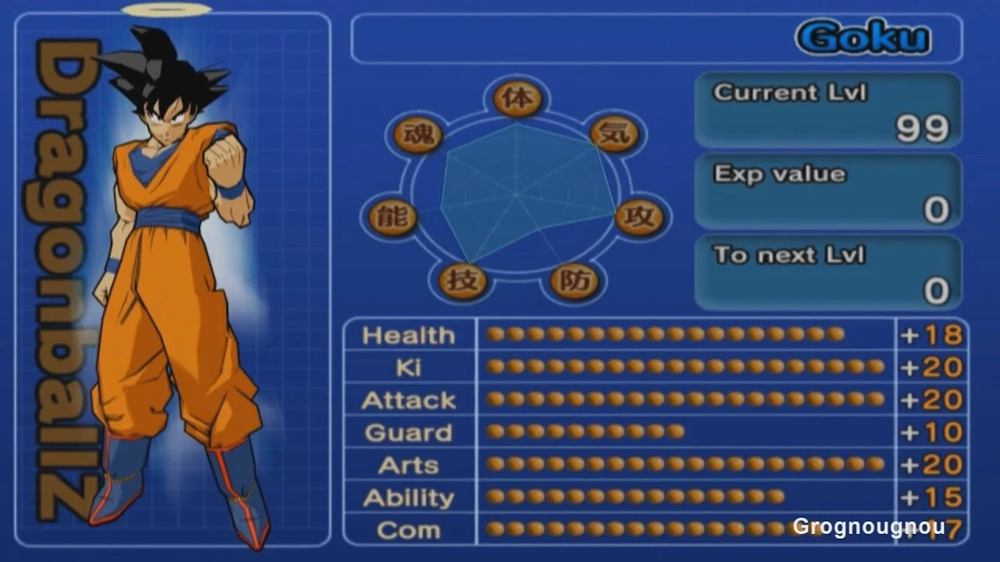
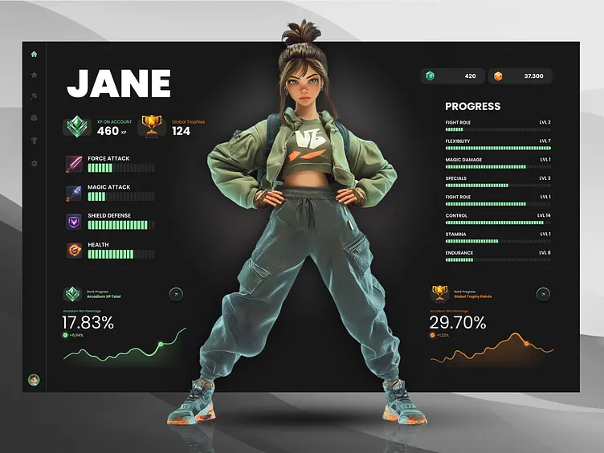
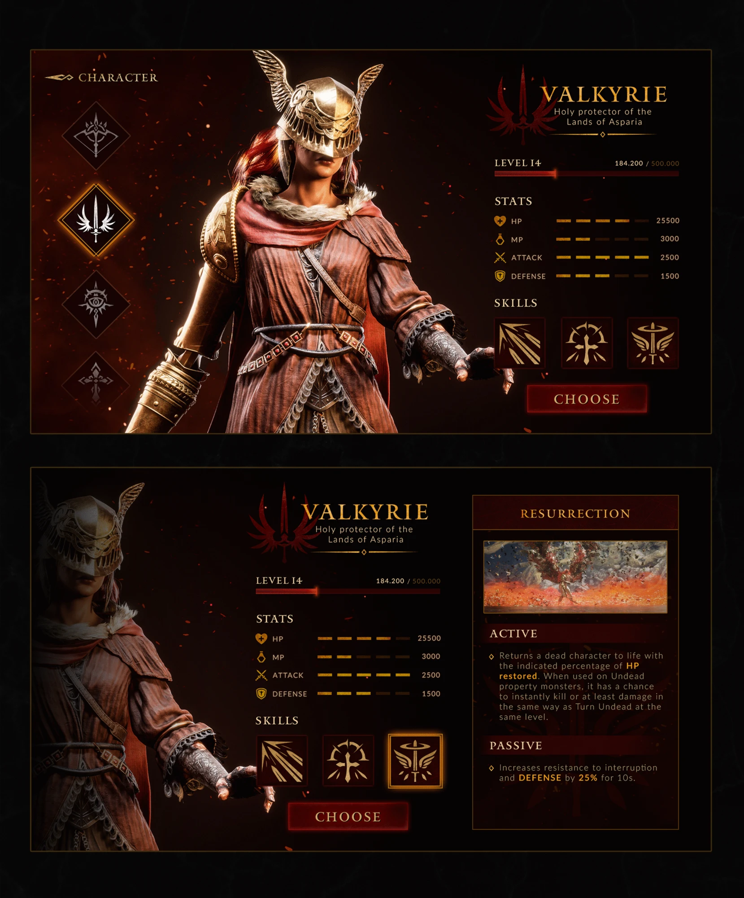

Product vision
Expand the POC into a full track-and-field universe. The long-term differentiator is the combination, not any single ingredient:
gameplay + realism + spectacle+ simulation + sport fandom
— not just another arcade running game.
Market intel
Speed Stars (39K ratings, 4.8★) already ships 60m–800m, hurdles, a medley relay, customization, ghosts, leaderboards, and cinematic replays.
Those are existing market features — table stakes, not differentiators. Cyan notes below flag where they already compete.
Become the sport
Turn a running game into a true track & field game — depth first, then breadth.
Make sprinting deep
More events as expansion content, and real racecraft in every one: the player should eventually make meaningful decisions, not execute a fixed tapping rhythm.
Hurdles
Aim for greater depth, not mere presence: hurdle rhythm, lead-leg selection, stride patterns, clipping, late-race fatigue.
Relays
Repeatedly requested by Speed Stars players — so make relays genuinely interesting: baton exchanges, exchange-zone strategy, team composition, runner order, anchor-leg drama.
Field events
The larger opportunity: a true track & field game, not just a running game. Players specifically ask competitors for long and triple jump.
Make it a career
Track stops being isolated races and becomes a sporting life.
Championship mode
A fictional international athletics universe with a real competition ladder — heats, semifinals, finals, qualification standards, lane assignments, advancing on place and time. Where the product could become much bigger.
Athlete development
Create a fictional athlete and develop them — with training mini-games that stay connected to actual track performance, never a generic RPG.
Make it yours
Not a phase — a pillar that cuts across Phase 6 (development) and Phase 10 (ranked). One athlete, created and owned by the player, whose shape on the attribute screen is how they run. Vision only; nothing here is scheduled.
PB 10.04
races 212
Why the radial graph
The touchstone is the Budokai 3 attribute menu: seven axes around a ring, one glance, and the shape is the fighter. Here the axes are the seven things that decide a 100m — reaction, drive, top speed, speed endurance, technique, power, composure — so a Starter and a Flyer look different before they ever line up.
The shape isn't cosmetic. Each axis maps to a term the race engine already has: reaction window, drive curve, v-max, deceleration, form tolerance, launch impulse, band steadiness under pressure.
Create the athlete
Gender, build, skin tone, hair, uniform, accessories — and running form, which is a parameter set, not a costume: stride length, cadence, arm carriage, drive lean. Form changes how the race looks and how it plays.
EXP and levels
Every race pays out — time, place, a PB, a clean form line at the gun. Levels grant attribute points spent on the radar; class caps keep a Flyer from also being the best starter. The graph fills in over a season the way a real athlete's does.
Classes and the skill tree
Some people are strong starters, some have crazy top-end. Classes make that a choice, and the tree gives each one abilities that stay inside the sport: a wider reaction window, a second gear at 60m, a dip that's worth more, decel that bites later.
Servers and ranked
Join a server, race people of similar skill and similar attributes — a rating for the thumbs, a band for the build — with seasons and a ladder. This is Phase 10's multiplayer wearing the athlete you made.
What it takes
| Piece | When | How |
|---|---|---|
| Skin tone, kit colours, spikes | NOW | Materials. The kit tint already exists; skin is one more material slot. |
| Running form | NOW | Stride boost, cadence clamp, lean and dip are already parameters on the runner. Expose them per athlete. |
| Build, gender, hair, uniforms | NEXT | A modular body: one base mesh with blend shapes for build and gender, clothing and hair as separate meshes rigged to the same Mixamo skeleton (Blender, or Character Creator 4 for the base). Existing clips keep working. |
| Gait that looks like the reference clip | NEXT | A sprint cycle with a real flight phase — video-to-mocap from footage we film ourselves. Original motion, like the athletes. |
| Attribute screen, EXP, classes | LATER | Local first: the radar and the tree can run entirely on-device against the race engine's terms. |
| Accounts, servers, ranked | LATER | Backend. Belongs to Phase 10 and stays parked until the 100m earns it. |
Visual references



REFERENCES ONLY — inspiration for structure and feel. Nothing here is a likeness, a licence, or a visual identity to copy.
Simulate everything
The MotionAthlete instinct, made playable: answer "who would win?" for any race you can imagine.
The simulation engine Differentiator
Construct hypothetical races: pick eight athletes, set the conditions, press SIMULATE, and watch it like a broadcast. Taps directly into the appeal of MotionAthlete-style videos.
"What if?" mode
A playable athletics sandbox. What happens with a +2.0 tailwind for everyone? At altitude? Over 150m? When a 100m specialist meets a 200m specialist?
Legends Licensing gate
Historical and current athletes, only through appropriate licensing, and much later. Never assumed for the POC — every athlete in the game today is fictional.
Race the world
Other people in the lanes, and more places to meet them.
Real multiplayer
The opportunity is multiplayer that feels like an actual track competition — not a feature checkbox.
Stadiums
Fictional and, eventually, appropriately licensed venues — each with its own atmosphere and conditions.
Broadcast it
The game becomes a virtual athletics broadcast — and the broadcast becomes the growth engine.
Spectator & broadcast mode
Watch races, switch cameras, follow splits, compare athletes, build cinematic replays. Could become a huge part of the game's identity.
Shareable race videos Differentiator
One tap after a race: GENERATE REPLAY — a short-form-friendly clip with cinematic cameras and broadcast overlays ("9.87 · NEW WORLD RECORD · 0.03 VICTORY"). A natural TikTok / Shorts growth loop:
Community & creator tools
Custom races, tournaments, challenge links, shareable simulations, creator codes. A creator posts "Can you beat my 100m?" — or "I simulated the fastest 200m runners ever." Directly aligned with the MotionAthlete inspiration.